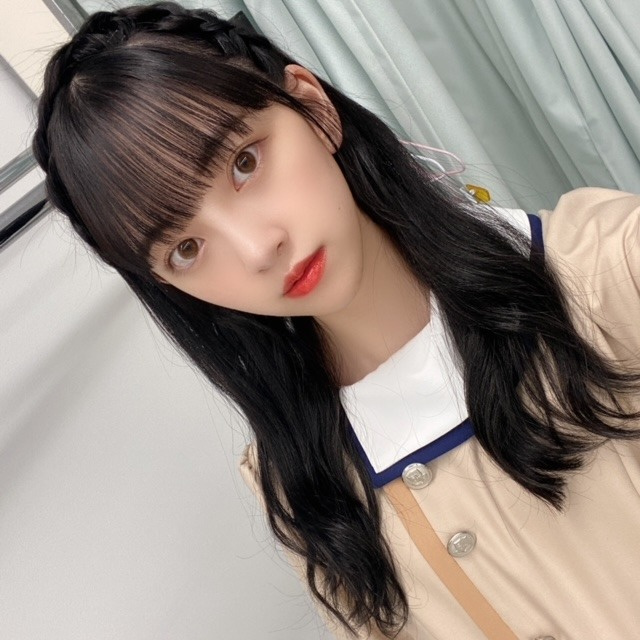

2020/1015Thu24

今日10月15日で
24歳になりました〜！
たくさんのお祝いをしてくださり
本当に本当にありがとうございます。
この24年間いろんなことがあって、
いまこうして楽しくやりがいを感じながら
毎日を過ごせていることを幸せに思います。
周りの方々に恵まれているし
夢や目標を叶えられる、追える環境にもいれて
そしてだいすきな乃木坂46で
1メンバーとして過ごせていて
よかったなって思うことばかりです。


今年はどんな年になるかな...
たくさんのことに挑戦して開拓して
自分探しの旅のような一年にしたいと思います。
そして周りの人を、幸せにできるような
強くて優しい人でありたいと思います。
こんな私ですが24歳の堀未央奈も
堀未央奈らしくがんばりますので
応援よろしくお願いします...>_<...
大好きです♡
あ、今日は家族がご馳走作って
待っててくれるんだ〜
楽しみすぎます うふへふひひひひ
わたし、赤だしの味噌汁が大好きなので
赤だしの味噌汁は必須にしてもらいました。笑
またインスタ載せますね
2020.10.15
2020/10/15 20:42
コメント(669)
未央奈さん お誕生日おめでとう！！
赤だしの味噌汁いいな～
これからの季節 温まりますねぇ。
インスタいつも楽しくみてます。
未央奈ちゃんらしくとってもイイ。
オードリーヘプバーン良く似合う。。。
素敵な大人になったなぁと。
ハロウィンコスプレも、楽しみにしてる！！
これからも応援してます！！
素敵な一年に なりますように
赤だしの味噌汁いいな～
これからの季節 温まりますねぇ。
インスタいつも楽しくみてます。
未央奈ちゃんらしくとってもイイ。
オードリーヘプバーン良く似合う。。。
素敵な大人になったなぁと。
ハロウィンコスプレも、楽しみにしてる！！
これからも応援してます！！
素敵な一年に なりますように
みおなおめでとう!!
大学生になったら絶対ライブで未央奈見に行く!!
大学生になったら絶対ライブで未央奈見に行く!!
未央奈！
24歳の誕生日おめでとう！
いろんな挑戦や開拓、楽しみにしてます。
今年は直接は会えてないけど、テレビ等で活躍見てます。
インスタも再開されたので、ちゃんとチェックしてるよ〜。
じゃ、素敵な24歳にしてください！
24歳の誕生日おめでとう！
いろんな挑戦や開拓、楽しみにしてます。
今年は直接は会えてないけど、テレビ等で活躍見てます。
インスタも再開されたので、ちゃんとチェックしてるよ〜。
じゃ、素敵な24歳にしてください！
未央奈お誕生日おめでとう！
これからもずっと応援していきます！
大好きです！！
これからもずっと応援していきます！
大好きです！！
未央奈ちゃん こんばんはー
こんばんはー
誕生日のブログに
改めて
お誕生日おめでとう と
と
感謝のコメントを送らせて下さい
自分が 美しいだけでなく
美しいだけでなく
後輩（向井葉月ちゃん
 ）にも
）にも
美を分け与えてくれる
優しい未央奈ちゃんは必ず幸せになるよー
誕生日のブログに
改めて
お誕生日おめでとう
感謝のコメントを送らせて下さい
自分が
後輩（向井葉月ちゃん
美
優しい未央奈ちゃん
未央奈ちゃんお誕生日おめでとう♪♡
誕生日おめでとうございます
実は僕も同じく今日誕生日で20歳になりました
これからもずっと応援しています
頑張って下さい‼️
実は僕も同じく今日誕生日で20歳になりました
これからもずっと応援しています
頑張って下さい‼️
Happy birthday
お誕生日おめでとうございます
ﾞ(pq´∀`)┌iiiiii┐(´∀`pq)ﾟﾟ
素敵な1年をお過ごしください
お誕生日おめでとうございます
ﾞ(pq´∀`)┌iiiiii┐(´∀`pq)ﾟﾟ
素敵な1年をお過ごしください
みおちゃん、こんばんは(^_^)
みおちゃん、お誕生日おめでとう＼(^o^)／
笑顔あふれる幸せな1年になりますように！
これからも変わらず応援してます！
それじゃ、体調に気を付けてね、またね(^o^)／
みおちゃん、お誕生日おめでとう＼(^o^)／
笑顔あふれる幸せな1年になりますように！
これからも変わらず応援してます！
それじゃ、体調に気を付けてね、またね(^o^)／
誕生日おめでとう！
まいやんの卒コン頑張ってね！
まいやんの卒コン頑張ってね！
未央奈ちゃんおめでとう！！
コロナが落ち着いたら岐阜に岐阜タンメン食べに行くよ^_^
素敵な一年になりますように
コロナが落ち着いたら岐阜に岐阜タンメン食べに行くよ^_^
素敵な一年になりますように
誕生日おめでとうございます！
ショートにしてぇー！！！
ショートにしてぇー！！！
みおちゃんお誕生日おめでとー！！
どんどん綺麗で美しくて可愛くなっていく未央奈が大好きです
とってもおしゃんな所も同じ女として
本当に憧れだし、尊敬してます。笑
これからも未央奈ちゃんらしく頑張って下さい！
ずっと応援してます！
体調には気をつけてね。
今年も未央奈ちゃんにとって最高の1年になりますように
どんどん綺麗で美しくて可愛くなっていく未央奈が大好きです
とってもおしゃんな所も同じ女として
本当に憧れだし、尊敬してます。笑
これからも未央奈ちゃんらしく頑張って下さい！
ずっと応援してます！
体調には気をつけてね。
今年も未央奈ちゃんにとって最高の1年になりますように
堀ちゃん誕生日おめでとう！！
黒髪ロングめっちゃかわいい 最高
最高
これからも堀ちゃんワールド全開で輝いてください！！
いつも応援してます。
黒髪ロングめっちゃかわいい
これからも堀ちゃんワールド全開で輝いてください！！
いつも応援してます。
お誕生日おめでとう！！
未央奈ちゃんらしくこれからも頑張ってください！
ずっと応援しています！永遠の推しです♡
素敵な１年になりますように
未央奈ちゃんらしくこれからも頑張ってください！
ずっと応援しています！永遠の推しです♡
素敵な１年になりますように
ブログ更新ありがとう
未央奈ちゃんお誕生日おめでとう‼︎大切な人の誕生日は自分のより嬉しい気がします笑 いつも支えてくれて本当にありがとう！これからもずっと推し続けます。素敵な一年になりますように…
今日も大好きです。
未央奈ちゃんお誕生日おめでとう‼︎大切な人の誕生日は自分のより嬉しい気がします笑 いつも支えてくれて本当にありがとう！これからもずっと推し続けます。素敵な一年になりますように…
今日も大好きです。
みおなちゃん更新ありがとう╰(*´︶`*)╯♡
24歳のお誕生日おめでとうございます！
素敵な1年になりますように
これからも応援しております(● ˃̶͈̀ロ˂̶͈́)੭ꠥ⁾⁾
ご馳走良きですね（╹◡╹）♡
24歳のお誕生日おめでとうございます！
素敵な1年になりますように
これからも応援しております(● ˃̶͈̀ロ˂̶͈́)੭ꠥ⁾⁾
ご馳走良きですね（╹◡╹）♡
改めて、お誕生日おめでとう♡
毎年10/15はワクワクドキドキソワソワする日です。
毎年お祝いの言葉を送れることが幸せだなって思います。
今年はどんな一年になるかな。楽しみだな。
たくさんの幸せがみおちゃんに訪れますように！
お互い頑張ろね。
これからもずっとずっと自慢の推しメンです。
大好きいいい♡
とっくんより
毎年10/15はワクワクドキドキソワソワする日です。
毎年お祝いの言葉を送れることが幸せだなって思います。
今年はどんな一年になるかな。楽しみだな。
たくさんの幸せがみおちゃんに訪れますように！
お互い頑張ろね。
これからもずっとずっと自慢の推しメンです。
大好きいいい♡
とっくんより
未央奈～お誕生日おめでとう！
素敵な一年になりますように。
素敵な一年になりますように。
堀ちゃん誕生日おめでとうございます。
堀家の皆様いつもありがとうございます。
堀家の皆様いつもありがとうございます。
未央奈さん
２４歳のお誕生日
おめでとうございます。
素敵な一年になりますように。
今は中々イベントも出来ない中ですが
開催できる日が来たら
握手会で会える日を楽しみにしています。
未央奈さん
これから寒くなる季節なのでくれぐれも
体調には気をつけて寒い日を乗り越えてくださいね。
さっしーより。
２４歳のお誕生日
おめでとうございます。
素敵な一年になりますように。
今は中々イベントも出来ない中ですが
開催できる日が来たら
握手会で会える日を楽しみにしています。
未央奈さん
これから寒くなる季節なのでくれぐれも
体調には気をつけて寒い日を乗り越えてくださいね。
さっしーより。
ヤッホー未央奈誕生日おめでとうございます さっきのコメントに誕生日のお祝い入れ忘れてしまった9日ぶりのブログに興奮、、喜び過ぎてしまいました、、メンゴ～☺️本当に誕生日おめでとう～❗24歳の一年も幸あらんことを祈っています❗でわこのあたりでおやすみなさい❗
未央奈誕生日おめでとう！！
乃木坂好きになったのは未央奈からでした！
これからも頑張ってください！応援してます！
乃木坂好きになったのは未央奈からでした！
これからも頑張ってください！応援してます！
❤️堀未央奈❤️お誕生日 おめでとうございます
今日は、僕も誕生日です☺️
同じ誕生日なのです、とても嬉しいです☺️
これからもずっと、堀未央奈を応援していきます♪
同じ誕生日同士、頑張りましょう♪
今日は、僕も誕生日です☺️
同じ誕生日なのです、とても嬉しいです☺️
これからもずっと、堀未央奈を応援していきます♪
同じ誕生日同士、頑張りましょう♪
未央奈ちゃん、こんばんは。
24歳お誕生日おめでとうございます‼️
笑顔が溢れる24歳でありますように。
体調に気を付けて頑張ってください。
これからも応援します。
また、更新まってます。
24歳お誕生日おめでとうございます‼️
笑顔が溢れる24歳でありますように。
体調に気を付けて頑張ってください。
これからも応援します。
また、更新まってます。
未央奈ちゃん誕生日おめでとう！
大好きです！
これからも応援させてもらうね！
大好きです！
これからも応援させてもらうね！
お誕生日おめでとう！
ずっと応援してるからね！頑張ってね！
ずっと応援してるからね！頑張ってね！
誕生日おめでとう！
これからも応援しています！
急に寒くなって、体調を崩しやすい季節なので、お気をつけください。
これからも応援しています！
急に寒くなって、体調を崩しやすい季節なので、お気をつけください。
未央奈ちゃん
お誕生日おめでとう
これからの1年が
素敵な1年でありますように
未央奈ちゃんの笑顔に
いつも元気をもらってます‼
これからも体調に気を付けて頑張ってね
これからも応援してます☺️
お誕生日おめでとう
これからの1年が
素敵な1年でありますように
未央奈ちゃんの笑顔に
いつも元気をもらってます‼
これからも体調に気を付けて頑張ってね
これからも応援してます☺️
堀ちゃん
お誕生日おめでとう！
755.インスタとブログも！
コメントさせてもらいました♡
世界で1番大好きです！
初めてハマったアイドルが堀ちゃんです(*'ω'*≡*'ω'*)”
いつもファン想いで
可愛くて儚くて、ぶれない堀ちゃんが
ほんとに大好きです。
また握手会で会える日を楽しみに頑張ります！
堀ちゃんも体調に気をつけてね！
24歳も最高の一年になるように
未央奈ファンみんなで応援していきます♡
お誕生日おめでとう！
755.インスタとブログも！
コメントさせてもらいました♡
世界で1番大好きです！
初めてハマったアイドルが堀ちゃんです(*'ω'*≡*'ω'*)”
いつもファン想いで
可愛くて儚くて、ぶれない堀ちゃんが
ほんとに大好きです。
また握手会で会える日を楽しみに頑張ります！
堀ちゃんも体調に気をつけてね！
24歳も最高の一年になるように
未央奈ファンみんなで応援していきます♡
未央奈ちゃん
お誕生日おめでとうございます。
体調に気をつけてこれからも
頑張ってください。
ずっと応援しています。
お誕生日おめでとうございます。
体調に気をつけてこれからも
頑張ってください。
ずっと応援しています。
ブログ更新ありがとー
そして
お誕生日おめでとうございます！！
これからも頑張ってください応援してます♥
素敵な一年になりますように
そして
お誕生日おめでとうございます！！
これからも頑張ってください応援してます♥
素敵な一年になりますように
こんばんは♪
お誕生日おめでとうございます‼
沢山お祝いされて凛々しいですー！
後輩にも称賛されて誇らしいです✨
周りへの気配りも素晴らしいですし、
グループへの貢献度も大きいですよ✴
ロング髪もとっても似合ってますし、
常に変化し続ける姿勢も魅力的です✌
やりがい沢山あるのも頼もしいです！
凄く温かいご家族の存在も素敵です☆
赤だしの味噌汁も大人っぽいです♡☺
お誕生日おめでとうございます‼
沢山お祝いされて凛々しいですー！
後輩にも称賛されて誇らしいです✨
周りへの気配りも素晴らしいですし、
グループへの貢献度も大きいですよ✴
ロング髪もとっても似合ってますし、
常に変化し続ける姿勢も魅力的です✌
やりがい沢山あるのも頼もしいです！
凄く温かいご家族の存在も素敵です☆
赤だしの味噌汁も大人っぽいです♡☺
お誕生日おめでとうございます
堀様にとって、乃木坂46にとって益々良い１年になりますように。
最近、キンモクセイが咲き始め、その素敵な香りを嗅ぐ度にこれは未央奈さんのイメージにピッタリだと思っています。
お味噌汁は赤出しがいいですよね。賛同します！
堀様にとって、乃木坂46にとって益々良い１年になりますように。
最近、キンモクセイが咲き始め、その素敵な香りを嗅ぐ度にこれは未央奈さんのイメージにピッタリだと思っています。
お味噌汁は赤出しがいいですよね。賛同します！
お誕生日おめでとうございます!益々のご活躍を期待してます。頑張ってください!応援してるよ!
未央奈ちゃん改めてお誕生日おめでとう！！24歳の未央奈ちゃんもその先の未央奈ちゃんも応援していくよ！！大好き！！！
家族がご馳走作って待っててくれてるのいいね！！すごく楽しそう¨̮♡またインスタ載るの楽しみにしてるね！！
それではまた！！
家族がご馳走作って待っててくれてるのいいね！！すごく楽しそう¨̮♡またインスタ載るの楽しみにしてるね！！
それではまた！！
24歳の誕生日おめでとう〜
未央奈ブログ更新ありがとう！
改めてお誕生日おめでとう！未央奈が沢山の人から祝ってもらえて、沢山の人から愛されてるんだなあと思うとファンとしても嬉しい。
未央奈が生まれてきてくれて、乃木坂に入ってくれて、よかったなと思ってるよ。いつも僕たちに幸せを与えてくれてありがとう。
24歳も素敵な一年になるといいね。ずっと応援してるよ。大好きです。
家族がご馳走作ってくれるの嬉しいね。赤だしの味噌汁美味しいよね。
編み込みカチューシャも可愛い！
では！
改めてお誕生日おめでとう！未央奈が沢山の人から祝ってもらえて、沢山の人から愛されてるんだなあと思うとファンとしても嬉しい。
未央奈が生まれてきてくれて、乃木坂に入ってくれて、よかったなと思ってるよ。いつも僕たちに幸せを与えてくれてありがとう。
24歳も素敵な一年になるといいね。ずっと応援してるよ。大好きです。
家族がご馳走作ってくれるの嬉しいね。赤だしの味噌汁美味しいよね。
編み込みカチューシャも可愛い！
では！
誕生日おめでとうございますー
どんどん美しくなってるー
どんどん美しくなってるー
ブログ更新ありがとうございます！！
そして、お誕生日おめでとうございます！！♡
未央奈ちゃんにとって、幸せで、素敵な毎日が過ごせますように、、
これからも応援します！！(´˘`＊)
そして、お誕生日おめでとうございます！！♡
未央奈ちゃんにとって、幸せで、素敵な毎日が過ごせますように、、
これからも応援します！！(´˘`＊)
F = G{Mm/r2(乗)}
突然何だ！？と思われた方もいるかと思いますが、これはかの有名なアイザック・ニュートンが発見した万有引力の法則です。
ニュートンは、引力とは惑星と太陽の間にだけ働くものではなく、あらゆる物体間に働く力であると考えました。そのためにこの名前がつく事となりました。
今回はこの万有引力の法則を通して、みおちゃん…いえ未央奈さんの持つ引力についてみていきたいと思います
まずは、右辺右側の分子部分。
こちら(Mm)は、
"Mionaさんmarvelousですわ！"の略です。
これに関しては説明はいりませんね。今年発売の写真集や雑誌の連載、それから各種SNSなどその媒体を問わず、未央奈さんから発信されるあらゆるものに接したときに素直に出て来る感想です
続けて、そんなマーヴェラスな未央奈さんを下支えしているのは、"ありたい自分であるためにストイックに努力をし続ける姿勢"だったり、"何年経っても変わらずにblogや色々なSNSの更新を続けて私たちを楽しませてくれる部分"。これらに対して想起されるrespectable、respectfulといった想いが右辺右側分母部分のr2(乗)に表されています
ちなみに、その左側のGは定数部分に当たります。定数と言うと、きちんと定まったものというイメージがあるかと思われますが、万有引力定数の測定は極めて困難であるため、今なお大きく変動をし続けています。(＊CODATAが4年おきに発表する基礎物理定数推奨値を参照。最新のものは2018年版。興味の沸いた方はググってみよう）
言い換えるならば、このGはこれからの未来によって変動をしていく部分。
Good! Great!! Grand!!! あるいはGorgeous!!!!
などといった様々な形で未知の可能性が形容されている訳ですね
以上のように、多くのリスペクトに支えられているマーヴェラスな未央奈さんの持つ引力、つまり人を惹き付ける力（＝魅力）はとてつもなく大きく、今なお測りえないものであると言う事が出来るのではないでしょうか
……え？具体的な数字が全然代入されていないじゃないか！？って？
いいんです、魅力は数値で測ることなんて出来はしないんですから
これでいいんです↓
Fantastic!!!
これからも空に輝く煌星のような存在でいてね
24歳のお誕生日おめでとう
みおちゃんにとって素敵な一年となりますように
突然何だ！？と思われた方もいるかと思いますが、これはかの有名なアイザック・ニュートンが発見した万有引力の法則です。
ニュートンは、引力とは惑星と太陽の間にだけ働くものではなく、あらゆる物体間に働く力であると考えました。そのためにこの名前がつく事となりました。
今回はこの万有引力の法則を通して、みおちゃん…いえ未央奈さんの持つ引力についてみていきたいと思います
まずは、右辺右側の分子部分。
こちら(Mm)は、
"Mionaさんmarvelousですわ！"の略です。
これに関しては説明はいりませんね。今年発売の写真集や雑誌の連載、それから各種SNSなどその媒体を問わず、未央奈さんから発信されるあらゆるものに接したときに素直に出て来る感想です
続けて、そんなマーヴェラスな未央奈さんを下支えしているのは、"ありたい自分であるためにストイックに努力をし続ける姿勢"だったり、"何年経っても変わらずにblogや色々なSNSの更新を続けて私たちを楽しませてくれる部分"。これらに対して想起されるrespectable、respectfulといった想いが右辺右側分母部分のr2(乗)に表されています
ちなみに、その左側のGは定数部分に当たります。定数と言うと、きちんと定まったものというイメージがあるかと思われますが、万有引力定数の測定は極めて困難であるため、今なお大きく変動をし続けています。(＊CODATAが4年おきに発表する基礎物理定数推奨値を参照。最新のものは2018年版。興味の沸いた方はググってみよう）
言い換えるならば、このGはこれからの未来によって変動をしていく部分。
Good! Great!! Grand!!! あるいはGorgeous!!!!
などといった様々な形で未知の可能性が形容されている訳ですね
以上のように、多くのリスペクトに支えられているマーヴェラスな未央奈さんの持つ引力、つまり人を惹き付ける力（＝魅力）はとてつもなく大きく、今なお測りえないものであると言う事が出来るのではないでしょうか
……え？具体的な数字が全然代入されていないじゃないか！？って？
いいんです、魅力は数値で測ることなんて出来はしないんですから
これでいいんです↓
これからも空に輝く煌星のような存在でいてね
24歳のお誕生日おめでとう
みおちゃんにとって素敵な一年となりますように
誕生日おめでとう！！
(☆´≧∀≦)σ ⌒ﾊｯﾋﾟｨﾊﾞｰｽﾃﾞｲ*みーちゃん！
髪長くなってる( ﾟдﾟ)ﾝﾏｯ!!
次はセンターでパフォーマンスできるかな|ωﾟ)
髪長くなってる( ﾟдﾟ)ﾝﾏｯ!!
次はセンターでパフォーマンスできるかな|ωﾟ)
誕生日おめでとうございます！
24歳おめでとうございます！
赤だし美味しいよね。特にまるやの八丁味噌。
24歳おめでとうございます！
赤だし美味しいよね。特にまるやの八丁味噌。
未央奈ちゃん、誕生日おめでとう！！
いつもたくさんブログとインスタ更新ありがとう！
素敵な一年になりますように！
少し寒くなってきたね。
体調に気をつけて！
応援してます！！
いつもたくさんブログとインスタ更新ありがとう！
素敵な一年になりますように！
少し寒くなってきたね。
体調に気をつけて！
応援してます！！
こんにちは‼︎
そして、改めまして、24歳のお誕生日おめでとうございます‼︎
本日2回目のコメントも、なんとか誕生日のうちに間に合いそうで、良かった良かった♪
昨日も書いたけど、未央奈、過ごしやすい素敵な季節に生まれたんですね‼︎
実りの秋で食べ物も美味しいし♪
真夏だとトップスは1枚、真冬だとコートで他の服が見えない、っていう状況に陥りやすいけど…
これぐらいの気温だと、重ね着したり、いろいろバリエーションも加えられるので、お洒落し甲斐がありますよね♪
未央奈がおしゃれ好きで食いしん坊なのは、誕生日月と関係があるのかも(笑)。
24歳の最初のブログは、編み込みカチューシャ、ロングバージョンですね‼︎
エクステなんだろうけど、全く違和感がない。
あっという間にロングになったり、ショートになったり。
『ロングにしようか、ショートにしようか』なんて、もうあまり悩む必要ないのかも。
いい時代ですね♪
24歳の未央奈も、これまで通り、高みを目指して頑張っていくんだろうなあ。
そして、自分も引き続き、そんな堀未央奈を応援していきます‼︎
ではでは、また。
24歳の堀未央奈が素敵な1年を過ごせますように♪
そして、改めまして、24歳のお誕生日おめでとうございます‼︎
本日2回目のコメントも、なんとか誕生日のうちに間に合いそうで、良かった良かった♪
昨日も書いたけど、未央奈、過ごしやすい素敵な季節に生まれたんですね‼︎
実りの秋で食べ物も美味しいし♪
真夏だとトップスは1枚、真冬だとコートで他の服が見えない、っていう状況に陥りやすいけど…
これぐらいの気温だと、重ね着したり、いろいろバリエーションも加えられるので、お洒落し甲斐がありますよね♪
未央奈がおしゃれ好きで食いしん坊なのは、誕生日月と関係があるのかも(笑)。
24歳の最初のブログは、編み込みカチューシャ、ロングバージョンですね‼︎
エクステなんだろうけど、全く違和感がない。
あっという間にロングになったり、ショートになったり。
『ロングにしようか、ショートにしようか』なんて、もうあまり悩む必要ないのかも。
いい時代ですね♪
24歳の未央奈も、これまで通り、高みを目指して頑張っていくんだろうなあ。
そして、自分も引き続き、そんな堀未央奈を応援していきます‼︎
ではでは、また。
24歳の堀未央奈が素敵な1年を過ごせますように♪
お誕生日おめでとうございます！
いい年でありますように！
ご馳走たのしみだね！
いい年でありますように！
ご馳走たのしみだね！
初めまして！
未央奈さん、お誕生日おめでとうございます！
日々の活動お疲れさま。
乃木坂46というグループを本格的に好きになっていくきっかけが7thの「バレッタ」のMVを観てからなので、感謝の気持ちでいます。
あれから、もうすぐで7年が経ちますね。7thシングルから7年なので、紅葉の秋空に、二重の虹(ダブルレインボー)が架かると良いなと密かに思っています。(ちょっとキザかな...)
ちなみに、二重の虹の外側の虹は通常の虹の色とは順番が逆になっているよ。
「アナスターシャ」
ブルックナーのシンフォニーを思わせる金管楽器の盛り上がりから、展望塔に2期生皆んなで旗を掲げるところが大好きで、感動で震えるものを感じました。(そちらは寒さで震えていたかもしれませんが.....)
男性の少年のような笑顔が良いという人がいますが、最近は、女性も時よりみせる少女のような笑顔が素敵だなあと、そんな歳の重ね方(二重の虹にかけてます)の女性が良いなあと勝手に思っています。
「周りの人を、幸せにできるような
強くて優しい人でありたい」
ファンとしては今年の46時間テレビでの「堀未央奈のキャラクターズブック」の今後にも期待しています。(^^)
それでは、アディオスです。
健康には気を付けて。
お元気で！
フット
未央奈さん、お誕生日おめでとうございます！
日々の活動お疲れさま。
乃木坂46というグループを本格的に好きになっていくきっかけが7thの「バレッタ」のMVを観てからなので、感謝の気持ちでいます。
あれから、もうすぐで7年が経ちますね。7thシングルから7年なので、紅葉の秋空に、二重の虹(ダブルレインボー)が架かると良いなと密かに思っています。(ちょっとキザかな...)
ちなみに、二重の虹の外側の虹は通常の虹の色とは順番が逆になっているよ。
「アナスターシャ」
ブルックナーのシンフォニーを思わせる金管楽器の盛り上がりから、展望塔に2期生皆んなで旗を掲げるところが大好きで、感動で震えるものを感じました。(そちらは寒さで震えていたかもしれませんが.....)
男性の少年のような笑顔が良いという人がいますが、最近は、女性も時よりみせる少女のような笑顔が素敵だなあと、そんな歳の重ね方(二重の虹にかけてます)の女性が良いなあと勝手に思っています。
「周りの人を、幸せにできるような
強くて優しい人でありたい」
ファンとしては今年の46時間テレビでの「堀未央奈のキャラクターズブック」の今後にも期待しています。(^^)
それでは、アディオスです。
健康には気を付けて。
お元気で！
フット
ほりちゃん、ハピバ！
えっ、えっ、もう24なの？？
と思ったのですが、2期生もずいぶんと長いから、そりゃそーだよなぁ、と。
いろいろと忙しそうですが、がんばってね！！
じゃーね！
えっ、えっ、もう24なの？？
と思ったのですが、2期生もずいぶんと長いから、そりゃそーだよなぁ、と。
いろいろと忙しそうですが、がんばってね！！
じゃーね！


未央奈がもう24歳、時の速さを感じます(僕は未央奈より年下ですが……乃木坂を応援していて未央奈が24歳は速いです)
未央奈は自分の考えをしっかり持っていて発言していて、人としてほんとに尊敬できる人だなと大人だと感じます。かっこいい女性、僕は好きです。これからも君らしく、未央奈らしくお仕事、アイドル人生を歩んで行ってください。Instagramも投稿頻度多くて嬉しいです。
それだけで生きる活力になります。メイクも詳しくて、女性も憧れる人多いんだろうなーと思います。いつかやっぱりキャプテンやって欲しいなって思ってます。最高の1年にしてくださいね。誕生日おめでとうございました。